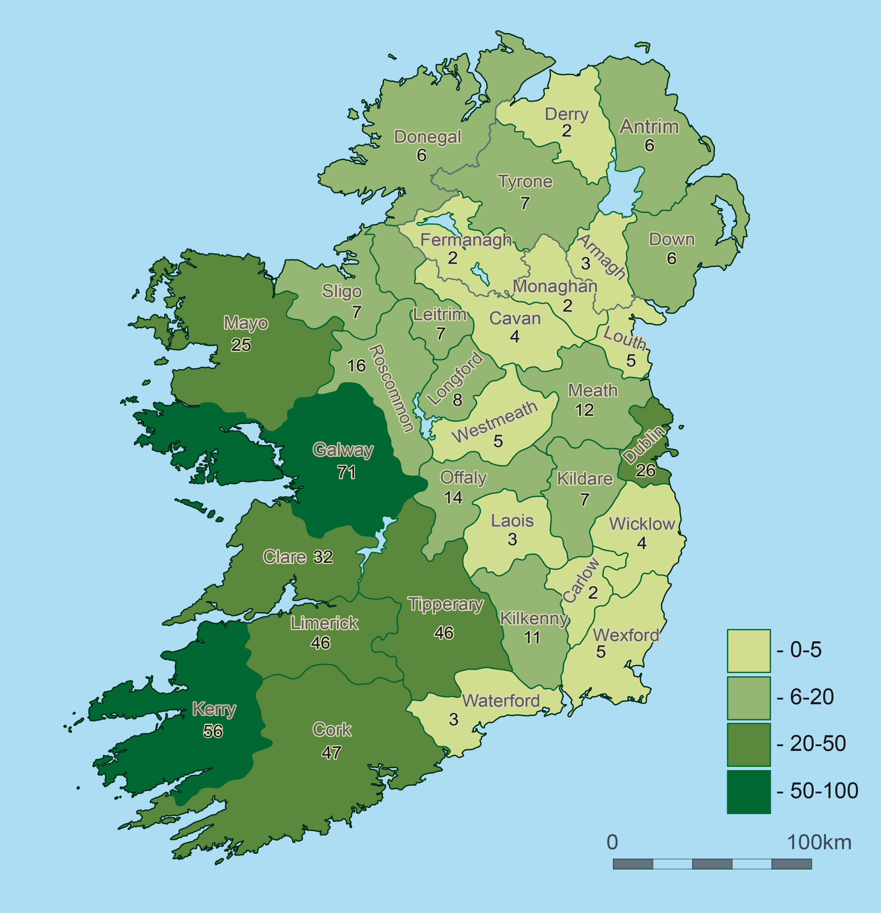

The Foyle Bridge, Inishowen & the Fanad Peninsula
North West Dunfanaghy to Donegal Town
Sligo Bay to Erris Head & the Mullet Peninsula
Achill to Westport
Inishbofin & Connemara
Galway Bay
The Flaggy Shore, the Burren, the Cliffs of Moher
Liscannor Bay to Loop Head
Kerry Head to the Dingle Peninsula
The Ring of Kerry
The Ring of Beara
Bantry Bay to the Sheep's Head
Goleen, Mizen Head & Roaring Water Bay
Baltimore, Toe Head & Galley Head
The Old Head of Kinsale